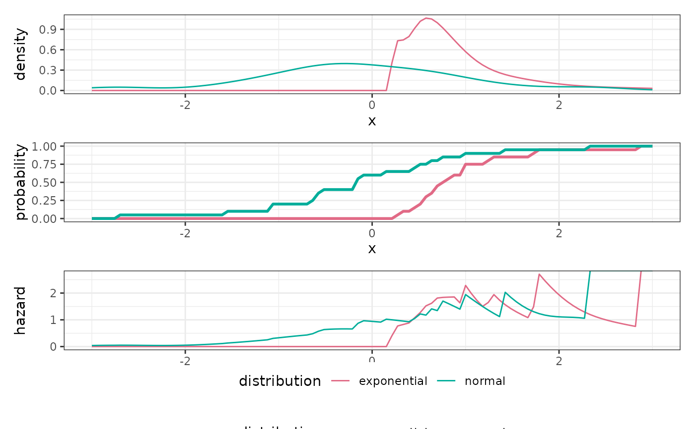

Creates an empirical distribution object from a sample.
Assumes iid. samples. with_params should not be used with this
distribution because estimation of the relevant indicators happens during
construction.
dist_empirical(sample, positive = FALSE, bw = "nrd0")Sample to build the empirical distribution from
Is the underlying distribution known to be positive?
This will effect the density estimation procedure.
positive = FALSE uses a kernel density estimate produced by density(),
positive = TRUE uses a log-kernel density estimate produced by
logKDE::logdensity_fft(). The latter can improve density estimation near
zero.
Bandwidth parameter for density estimation. Passed to the density
estimation function selected by positive.
An EmpiricalDistribution object.
sample() samples iid. from sample. This approach is similar to
bootstrapping.
density() evaluates a kernel density estimate, approximating with zero
outside of the known support. This estimate is either obtained using
stats::density or logKDE::logdensity_fft, depending on positive.
probability() evaluates the empirical cumulative density function
obtained by stats::ecdf.
quantile() evaluates the empirical quantiles using stats::quantile
hazard() estimates the hazard rate using the density estimate and the
empirical cumulative density function: h(t) = df(t) / (1 - cdf(t)).
Other Distributions:
Distribution,
dist_bdegp(),
dist_beta(),
dist_binomial(),
dist_blended(),
dist_dirac(),
dist_discrete(),
dist_erlangmix(),
dist_exponential(),
dist_gamma(),
dist_genpareto(),
dist_lognormal(),
dist_mixture(),
dist_negbinomial(),
dist_normal(),
dist_pareto(),
dist_poisson(),
dist_translate(),
dist_trunc(),
dist_uniform(),
dist_weibull()
x <- rexp(20, rate = 1)
dx <- dist_empirical(sample = x, positive = TRUE)
y <- rnorm(20)
dy <- dist_empirical(sample = y)
plot_distributions(
exponential = dx,
normal = dy,
.x = seq(-3, 3, length.out = 100)
)
#> Warning: Removed 12 rows containing missing values (`geom_line()`).
